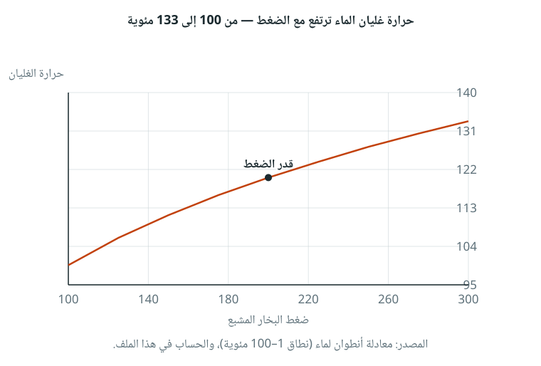

لماذا ينضج طعام قدر الضغط أسرع؟
Why a pressure cooker cooks faster
ضغط أعلى داخل القدر يرفع درجة غليان الماء من 100 إلى نحو 120 مئوية، والماء الأسخن وحده هو سبب النضج الأسرع — لا «الضغط» بذاته.
الماء يغلي حين يتساوى ضغط بخاره مع الضغط المحيط. على سطح البحر الضغط 101.3 كيلوباسكال فيغلي عند 100 مئوية. أغلِق القدر بإحكام فيرتفع الضغط الداخلي إلى قرابة الضغطين الجويين، ويصير شرط الغليان أعلى: عند 200 كيلوباسكال تتوازن درجة الإشباع عند 120.1 مئوية بالحساب من معادلة أنطوان. كل ما يحدث بعد ذلك مألوف كيميائياً: تفاعلات النضج تتسارع مع الحرارة، وقاعدة عملية متوارثة تقول إن كل 10 كلفن زيادة تقطع الزمن إلى نحو النصف؛ فرفع الحرارة 20 كلفناً يفسّر اختصار الزمن من ساعات إلى عشرات الدقائق. المهم ألا يُنسب الفضل إلى الضغط نفسه: الضغط أداة، والرقم الذي يطبخ هو حرارة الماء.
الآلية
كيف يحدث الأمر على مستوى الجسيمات أو المتغيّرات المباشرة
الغليان توازن بين ضغط البخار المشبع والضغط الخارجي. رفع الضغط الخارجي يعني أن الجزيئات تحتاج طاقة أعلى للهروب إلى الطور البخاري، فترتفع حرارة الغليان. لا تتغير حرارة البخار الملامس للطعام، بل حرارة الماء السائل نفسه — وهذا هو سبب النضج الأسرع، لا «دفع» البخار للطعام.
الأرقام والوحدات
العلاقات والوحدات والنطاقات العددية التي تسند الشرح
من معادلة أنطوان لماء: عند 101.325 كيلوباسكال الناتج 100.0 مئوية، وعند 200 كيلوباسكال 120.1 مئوية، وعند 300 كيلوباسكال 133.3 مئوية. الفرق بين الحالتين الأولى والثانية 20.1 كلفن. الحرارة الكامنة للتبخّر عند 100 مئوية 2257 كيلوجول/كيلوجرام، وهي لا تُدفع للطعام في قدر مغلق بل تعود للماء عند التكثّف.
الفرق الدقيق
المفهوم الملتبس الذي يُخلَط به، وأين ينفصلان
يُخلط بين أمرين: «البخار يطبخ» و«الحرارة تطبخ». البخار وسيط نقل حرارة ممتاز لأن تكثّفه يحرّر حرارة كامنة كبيرة، لكن حرارة البخار المشبع مرتبطة بضغطه. في قدر مفتوح الحرارة سقفها 100 مئوية مهما كان اللهب؛ الحرارة الزائدة تذهب إلى التبخير لا إلى رفع الحرارة.
حدود التعريف
أين ينكسر التعريف أو النموذج وما الذي لا يفسّره
الأرقام مبنية على ماء نقي وضغط موحّد داخل القدر. الملوحة ترفع حرارة الغليان قليلاً، والضغط الفعلي يتغيّر مع الحجم ونسبة البخار، ومنظّم الضغط يفتح ويغلق فيتذبذب الضغط حول قيمة اسمية. والقاعدة «كل 10 كلفن تنصف الزمن» تقريبية وتفشل عند نضج الطعام نفسه لا التفاعلات فقط.

| الكمية | القيمة | المصدر |
|---|---|---|
| حرارة غليان الماء عند الضغط الجوي | 100.0 °C | [1] |
| حرارة الغليان داخل قدر بضغط 200 كيلوباسكال | 120.1 °C | [1] |
| الحرارة الكامنة للتبخّر عند 100 مئوية | 2257 kJ/kg | [2] |
المصادر
- 1 OpenStax, College Physics 2e — Phase Change and Latent Heat — OpenStax. openstax.org/books/college-physics-2e/pages/14-3-phase-change-and-latent-heat · اطُّلع عليه 2026-11-16
- 2 NASA Glenn — Enthalpy — NASA. www1.grc.nasa.gov/beginners-guide-to-aeronautics/enthalpy-2-2/ · اطُّلع عليه 2026-11-16
راجعه: مراجعة آلية — ديوان المعرفة (أرقام محسوبة + مصادر متحققة) 2026-11-16 · 2026-11-16 · آخر تحديث 2026-11-16
رجوع إلى المقالات